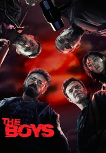

")
 gesehen am 02.08.2019
gesehen am 02.08.2019 
 IMDB-Wertung: 9.2 / 10
IMDB-Wertung: 9.2 / 10  Tomatometer: 73
Tomatometer: 73  Metascore:
Metascore: 
The Boys ist eine ehrfurchtslose Interpretation dessen, was passiert, wenn Superhelden, die berühmt sind wie Stars, einflussreich sind wie Politiker und verehrt werden wie Götter, ihre Superkräfte missbrauchen, anstatt Gutes zu tun. Die Machtlosen stellen sich gegen die Übermächtigen, als The Boys versuchen, die Wahrheit über "The Seven" und Vought dahinter ans Licht zu bringen.
Jahr: 2019
Dauer: 60 Minuten
FSK:
Land: USA Studio: Amazon StudiosTonspuren: - , - , - , - , - ,
Untertitel: Deutsch, Englisch,
Auflösung: 720p (1280x720) Größe: 1904 MB
Genre: Action, Sci-Fi, Komödie, Krimi, TV-Serie
Regisseur: Philip Sgriccia, Daniel Attias, Jennifer Phang, Stefan Schwartz, Frederick E.O. Toye
Drehbuch: Garth Ennis, Evan Goldberg, Eric Kripke, Seth Rogen, Anne Cofell Saunders
Soundtrack:
Darsteller:
 Karl Urban als Billy Butcher, 8 episodes, 2019
Karl Urban als Billy Butcher, 8 episodes, 2019 Jack Quaid als Hughie Campbell, 8 episodes, 2019
Jack Quaid als Hughie Campbell, 8 episodes, 2019 Erin Moriarty als Starlight, 8 episodes, 2019
Erin Moriarty als Starlight, 8 episodes, 2019 Laz Alonso als Mother's Milk, 8 episodes, 2019
Laz Alonso als Mother's Milk, 8 episodes, 2019 Elisabeth Shue als Madelyn Stillwell, 8 episodes, 2019
Elisabeth Shue als Madelyn Stillwell, 8 episodes, 2019 Colby Minifie als Ashley, 6 episodes, 2019
Colby Minifie als Ashley, 6 episodes, 2019 Jennifer Esposito als Agent Susan Raynor, 6 episodes, 2019
Jennifer Esposito als Agent Susan Raynor, 6 episodes, 2019 Simon Pegg als Hughie's Dad, 4 episodes, 2019
Simon Pegg als Hughie's Dad, 4 episodes, 2019 Ann Cusack als Donna January, 4 episodes, 2019
Ann Cusack als Donna January, 4 episodes, 2019 David Andrews als Senator Calhoun, 2 episodes, 2019
David Andrews als Senator Calhoun, 2 episodes, 2019 John Doman als Jonah Vogelbaum, 2 episodes, 2019
John Doman als Jonah Vogelbaum, 2 episodes, 2019 Haley Joel Osment als Mesmer, 2 episodes, 2019
Haley Joel Osment als Mesmer, 2 episodes, 2019 David Reale als Evan Lambert, 2 episodes, 2019
David Reale als Evan Lambert, 2 episodes, 2019 Laila Robins als Grace Mallory, 2 episodes, 2019
Laila Robins als Grace Mallory, 2 episodes, 2019 Jay Yoo als Colby's Doctor, 2 episodes, 2019
Jay Yoo als Colby's Doctor, 2 episodes, 2019 Billy Zane als Himself, 2 episodes, 2019
Billy Zane als Himself, 2 episodes, 2019 Paulino Nunes als Mayor of Baltimore, 1 episode, 2019
Paulino Nunes als Mayor of Baltimore, 1 episode, 2019Datei: X:\Comic-Serien\Boys, The\The Boys S01E01.mkv seit 26.07.2019
Festplatte: Comicverfilmungen+MusikCD
 Es gibt insgesamt 34 Filme in der Gruppe 'Comic-Serien'
Es gibt insgesamt 34 Filme in der Gruppe 'Comic-Serien'